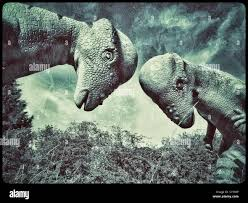

Marinos
Desde Cero
Desde Cero
The Petroleum by meteorite. Painted in 66.000.000 a.c
Los animales prehistóricos han sido un enigma para el hombre. Imaginar un mundo completamente diferente con animales que hoy no existen nos hace cavilar sobre los millones de años que tiene este planeta y la riqueza que ha albergado. Los dinosaurios son el grupo prehistórico favorito, pero lo cierto es que existieron grupos de morfología extraordinaria que probablemente no sabías que estaban separados de los dinosaurios.
En este interesante artículo de EcologíaVerde descubrirás toda la información que necesitas para conocer más de cerca el sorprendente mundo de tipos de dinosaurios marinos y sus características
The Petroleum by meteorite. Painted in 66.000.000 a.c
Los dinosaurios herbívoros necesitaban contar con una determinada estructura anatómica que les permitiera defenderse de sus temibles depredadores carnívoros. En la siguiente lista veremos muchas de las principales características de los dinosaurios herbívoros:
CTRL+SCtrl + S
de;
la;
do;
A;
rri;
ba;
La era del Mesozoico es conocida como la era de los dinosaurios porque fue para este tiempo geológico cuando prosperaron hasta el punto
de ser el grupo de vertebrados más abundante. No obstante, no fueron los únicos animales que lograron progresar. Los reptiles lograron a
adaptarse a otros medios además del terrestre como, por ejemplo, al mar. Los dinosaurios no tuvieron capacidad de adaptarse a este medio.
Por lo tanto, no existieron dinosaurios marinos como tales.
Suele confundirse a los reptiles marinos con los dinosaurios por haber sido contemporáneos y tener algunas características similares, pero
son grupos separados. Es importante recalcar que el término dinosaurio marino es incorrecto, aunque popularmente se utilice el término sin
distinción.
Los primeros reptiles acuáticos.
Similares a los delfines actuales.
Tortugas marinas de caparazón mínimo y hoy extintas. Algunas eran de tamaño gigante.
Son las tortugas marinas actuales.
con dientes en forma de placas.
El único representante viviente de esta familia es la tortuga laúd.
lagartos acuáticos, similares en morfología a los varanos actuales.
de cuello largo, cuerpo ancho y aletas muy largas.
similares a cocodrilos.
similares a lagartos pero son cuellos muy largos.
Currie, P. J., & Padian, K. (Eds.). (1997). Encyclopedia of dinosaurs. Elsevier.
Norell, M. A. (2019). Patagotitan mayorum. The World of Dinosaurs: An Illustrated Tour, Chicago: University of Chicago Press, pp. 156-159.
Sistema APB garantizada .

{kind=link}